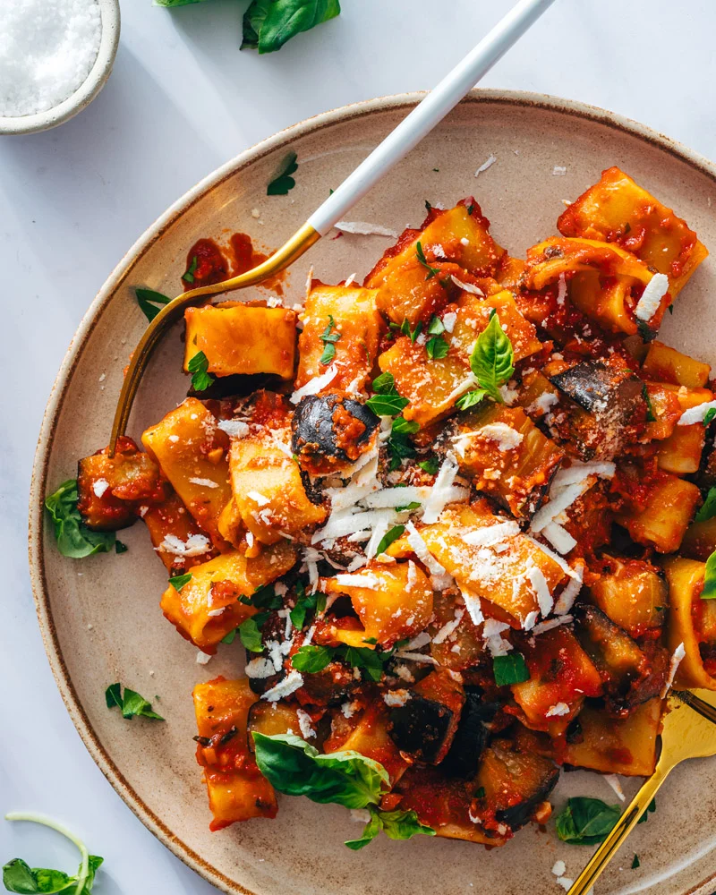

Recipes with Lara
Hello! My name is Lara. This is my personal website where I showcase my favourite recipes. Enjoy!
Say Hello
Pasta Alla Norma

Ingredients:
500g of pasta (penne, spaghetti or rigatoni)
3 eggplants
4 cloves of garlic
8 San Marzano tomatoes
60 grams of basil
150 grams of salted ricotta to garnish
olive oil
pinch of salt
Instructions:
Cut eggplants into 1cm slices, sprinkle with salt to absorb excess moisture.
Blanch and peel tomatoes. Cut tomatoes into pieces and remove seeds.
Heat olive oil in pan and fry minced garlic for one minute, or until fragrant.
Add chopped tomatoes to pan, along with basil, salt and cook for over a low heat until sauce thickens.
Rinse eggplant slice and pat dry with paper towel.
In another pan, fry eggplant, 2 mins each side.
Cook pasta in salted water until Al Dente, drain and add to pan with tomatoes.
Serve pasta with tomato sauce, top with fried eggplant, basil leaves and sprinkle with ricotta.